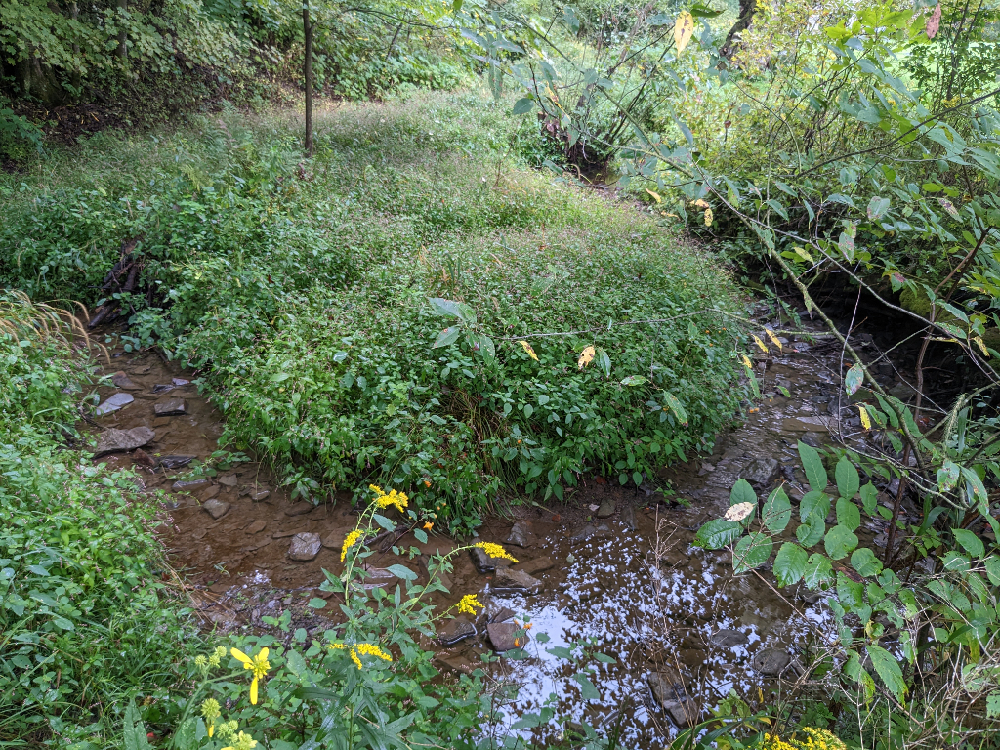

Riparian East, Part 2
Concept
This project
is seeking to enhance the continuation of the Part 1 Riparian East stream, from
the east edge of the yard upstream until it enters the ChicoryLane property
several hunded yards (300) further east. Whereas the Part 1 segment borders the most developed sections of
the property adjacent to the house, yard, and barn, the Part 2 segment borders
on the north side a
naturlized pollinator field and a small portion of a Native Grasses grassland.
On the south side is a steep bank and hillside with a remnant section of Hemlock
- Red Oak - Mixed Hardwood Forest. A number of native
trees unusual in the ChicoryLane property are found here including Hemlocks, Beech trees,
as well as American and Hop Hornbean. The main focus
of the project is enhancement through increasing seleced species, reducing less
desirable or invasive ones, and introduce several complementary new species not
ccurrently found in this area. It will largely be a streambank and floodplain
enhancement, with minimal additons to the steeper hillside.

Steps
- Select a site
- The Riparian section of strean beginning at the eastern edge of the yard
andextending East some 300 yards untilit enters the Chicorylane property.
- Document it
- Images
(project early)
- Plant
species
- Inventory wildlife (fish, birds, insects) in or using the stream
- Base Map
- Inventory and map vegetation in designated sites of a 50-ft riparian area on each streambank
Consider and Plan changes
- Replace invasive non-native plants with natives and control regrowth by cutting and, possibly, herbicide use
- Plant Palettes
- Species reductions
- Honeysuckle, Autumn Olive, Walnuts
- Species additions
- Hickory, Hophornbean, American Hornbean, Various Hardwoods
- Planting Map
Implement
Assess
{kind=link}